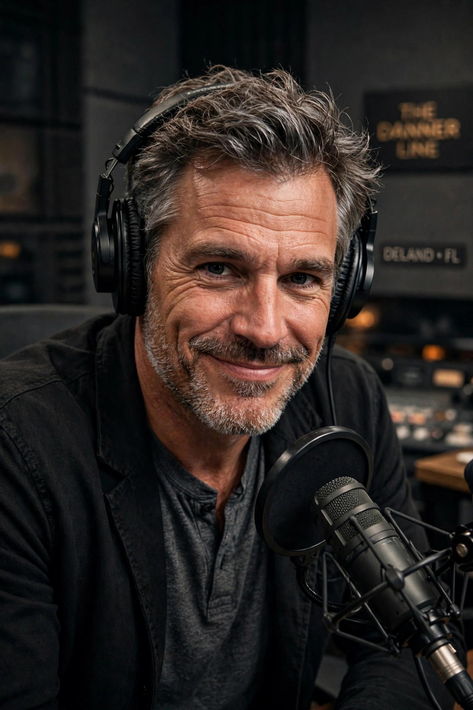
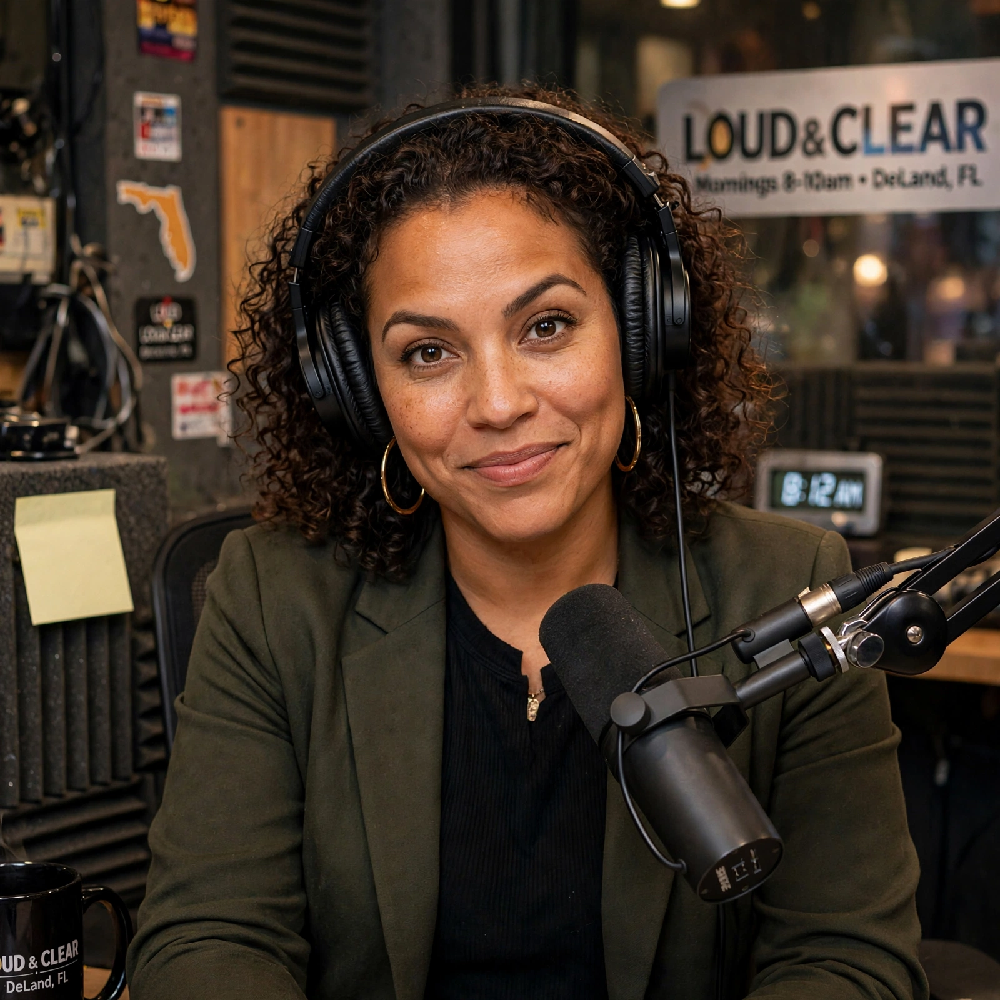
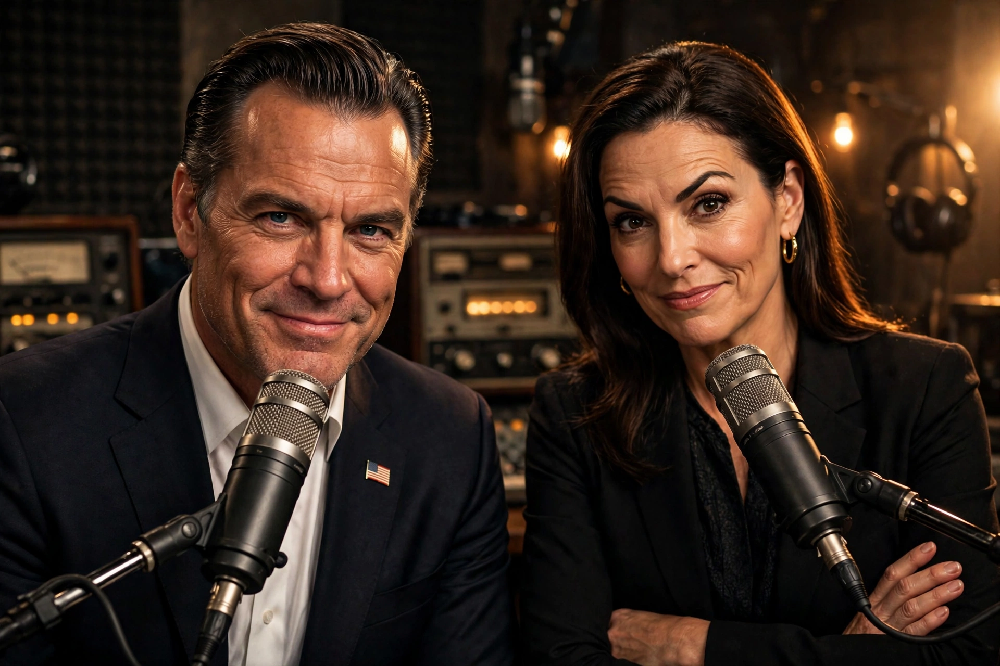
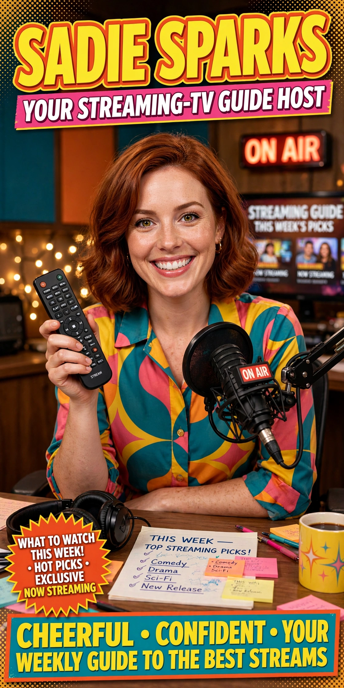
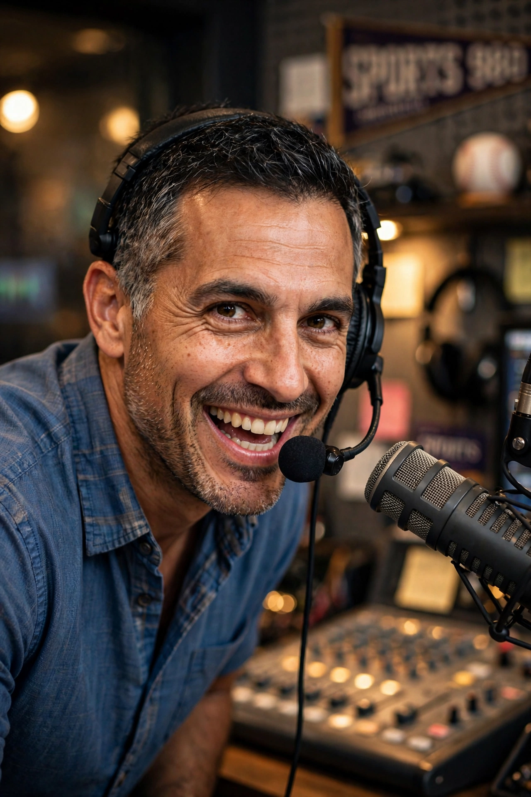
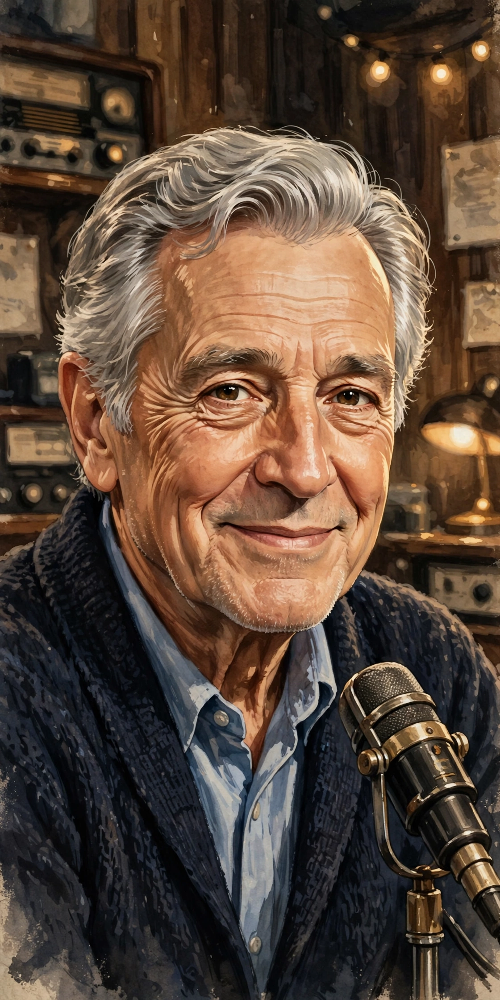

“The Heart and Soul of Volusia County”
Six shows. Zero dead air. Every episode below, free to play.

Weekday mornings. Sharp, sarcastic, acerbic — Mack takes the day’s most explosive story and lets Volusia County fight it out on the lines.
23 Episodes →
Late mornings. Progressive, warm but relentless — Dana dismantles the weak arguments kindly, with dry-witted Sam on the boards.
21 Episodes →
Weekday afternoons at five. He brings the outrage, she brings the receipts — the drive home just got a whole lot louder.
11 Episodes →
Every evening. Sixty seconds on what to stream tonight — new drops and trending titles, no spoilers, remote control required.
14 Episodes →
Sunday nights. The pros, college ball, and Volusia County Friday night lights — Marty raps the weekend’s scores and lets the county argue the calls.
2 Episodes →
Overnight, every night. Warm, curious, and direct — Dudley takes your calls on the day’s news, sports, and life itself, from DeLand and around the world.
3 Episodes →The voices behind the mic, in living color.
The Danner Line — Promo
Loud & Clear — Promo